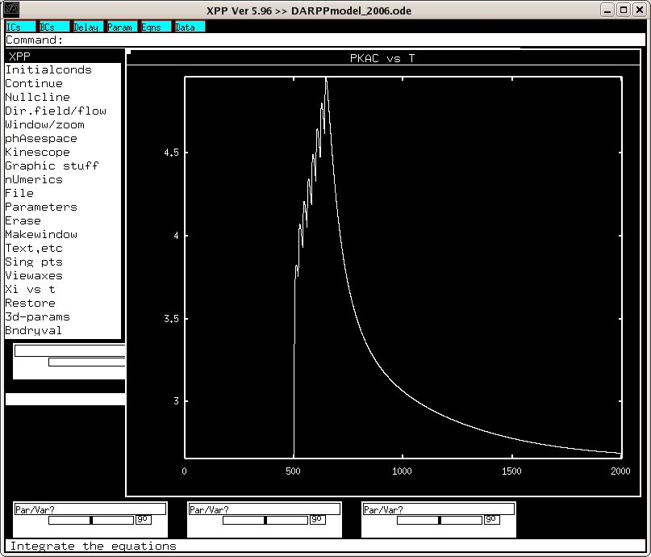

This is the readme for the XPP model associated with the paper: Lindskog M, Kim M, Wikstrom MA, Blackwell KT, Kotaleski JH (2006) Transient calcium and dopamine increase PKA activity and DARPP-32 phosphorylation. PLoS Comput Biol 2:e119 This model contains corrections for several typos that appeared in the paper. Please see the top of the code for details. Model usage: Start XPP with the model with a command like xppaut DARPPmodel_2006.ode Run the model by clicking on Initialconds -> (G)o After the model is done running you can create the panels of Fig 5A-F by plotting the variables "PKAc", "p34", "PP1", "ratio", "p75" and 2*"PKAr". To plot Fig 5A, for example, click on Graphic Stuff -> (E)dit curve then press Enter on the keyboard Replace the Y-Axis: field with the value PKAc click OK Click on Window/Zoom -> (F)it then you will have a graph that looks like:  This XPP file was supplied by Dr Jeanette Kotaleski jeanette@csc.kth.se